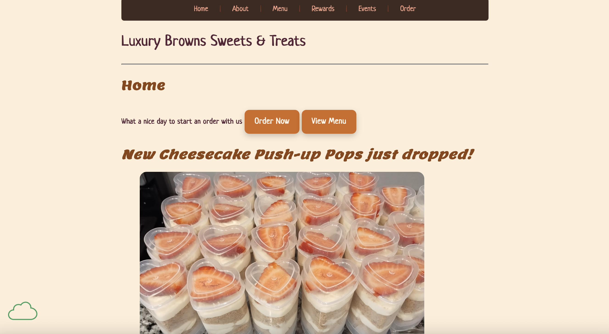

Peer Review 2: Green, Alana

Evaluation
- Submission: Correct Link
- File/Folder Names: Correctly named
- Design:
- The pages font size and contrast is sufficient but it might be difficult to read for some users due to the font. I would recommend increasing the font a little to improve readability for all users.
- The page has site colors and fonts using the standard .css file.
- CRAP:
- Contrast: The colors contrast well with each other with headings standing out. The buttons are also bright and stand out. In the Menu page, for each subcategory, I would suggest making them different size than the regular text so it stands out more.
- Repetition: This website uses consistent colors and fonts throughout all the pages. The only thing I noticed is that the Rewards page does not have the HTML and CSS validation links in the footer like the rest of the pages do.
- Alignment: The alignment is good throughout all the pages, making the website very visually appealing. I like how on the Menu page, the text is to the right of the image, giving it a clean and organized look.
- Proximity: The overall design and layout of the pages is well organized and elements are grouped together if needed.
- Page has within it:
- Header: Yes
- Main: Yes
- Footer: Yes
- Navigation is present and works
- Header has site/brand name: Yes
- Main starts with name of page as h2: Yes
- Page has brand tagline somewhere: Yes
- Page has footer with:
- No menu for users pages
- Page has html validation link
- Page has css validation link
- Overall: I think this website is very well designed with just minor fixes needed to improve usability and overall design. The pictures are all very bright and colorful, improving the website design. The navigation is also well organized and easy to navigate and each page includes a good variety of information. I love the overall theme of this website, awesome job!